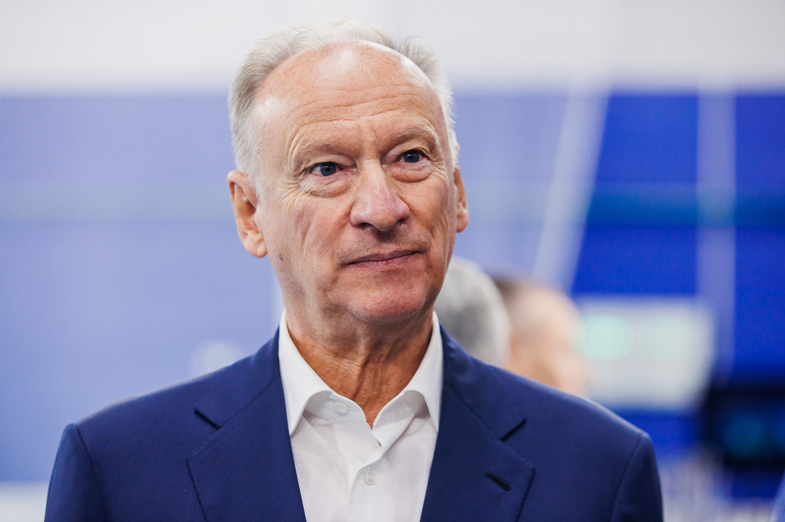

Серый кардинал. Архитектор силовой политики.

Патрушев — один из самых влиятельных людей в Кремле, чьё имя редко появляется в заголовках. Бывший директор ФСБ и многолетний секретарь Совета Безопасности, он сформировал идеологию «осаждённой крепости», которая оправдывает внешнюю агрессию угрозами изнутри и снаружи.
Родился в семье военного. Окончил Высшую школу КГБ. Начинает карьеру в органах государственной безопасности в Ленинграде.
Переход из КГБ в ФСБ. Знакомство с Путиным в ленинградском управлении. Становится частью его ближайшего окружения. Руководит управлением ФСБ по СПб и Ленобласти.
Сменяет Путина на посту директора ФСБ, когда тот становится премьером. Годы его руководства — резкое расширение полномочий спецслужбы и усиление слежки. Участвует в планировании операции в Чечне.
Один из ключевых архитекторов российской стратегии в отношении Украины, Сирии, Грузии. Автор доктрины о «незаконности» украинской государственности. Убеждённый сторонник расширения зоны влияния России.
Один из ключевых идеологов вторжения. Публично заявляет, что «Украина как государство не имеет будущего». Введены санкции ЕС, США и Великобритании. Факт Интерпр.
Патрушев работает в тени. Его метод — идеологическое рамирование: прежде чем Россия применяет силу, Патрушев создаёт доктринальную основу. Украина — «не государство», НАТО — «угроза», Запад — «агрессор». Каждый тезис становится обоснованием следующего шага. Он не появляется на ток-шоу — его слова транслируются через решения Совета Безопасности, доктрины и закрытые совещания. Публичные заявления — редкость, но каждое из них — программный документ. Интерпр.
Персональные санкции ЕС с 2022 года — за роль в планировании и идеологическом обосновании вторжения. Факт США и Великобритания ввели аналогичные меры. Активы заморожены.
Все утверждения в данном досье основаны на открытых публичных источниках. Факты, отмеченные Факт, имеют прямые первичные источники. Отмеченные Интерпр. — авторская интерпретация задокументированных событий.